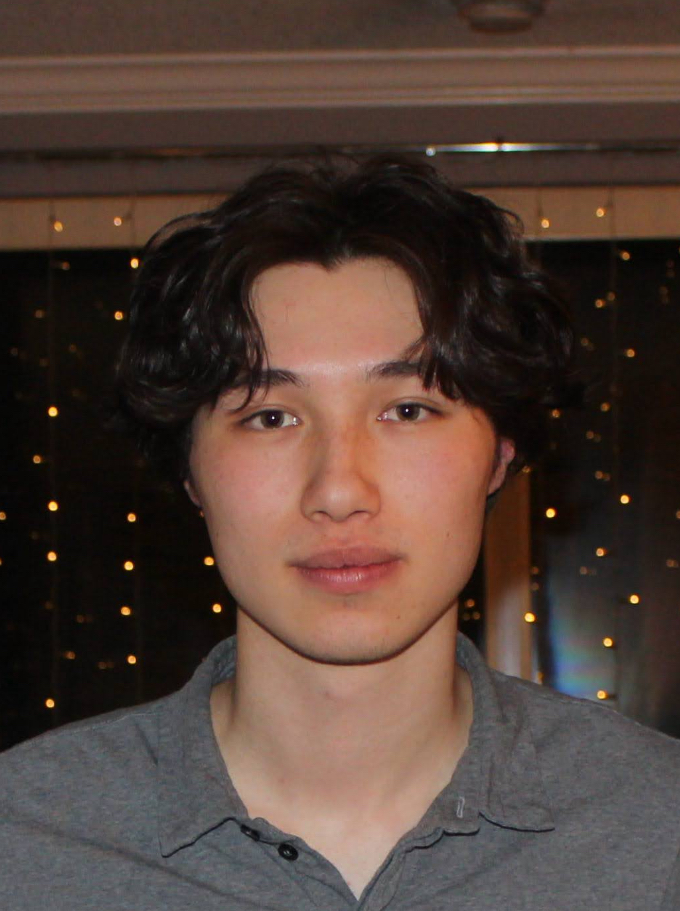

HOME
Hi, I'm Ethan, a 3rd year Engineering student at the University of Waterloo. Welcome to my portfolio- a site I built to highlight my experience and flesh out some of my recent projects. Enjoy!

ABOUT
From experiments to products
{{ bioText }}
{{ grp.label }}
{{ grp.value }}
CURRENTLY
{{ row.label }}
{{ row.value }}
PROJECTS
Projects & Research
{{ tag }}
WORK
Internships & Experience
{{ job.num }}
{{ job.role }}
{{ job.dates }}
{{ job.company }} · {{ job.location }}
{{ tag }}
- {{ b }}
RESUME
Full Resume
Ethan Park — Resume
Updated August 6, 2026 · PDF